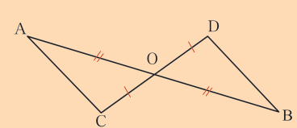
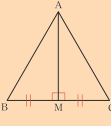
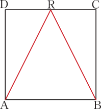
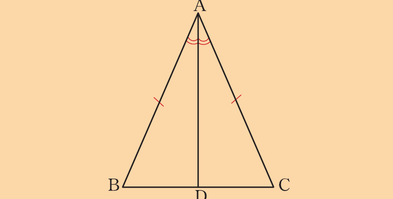
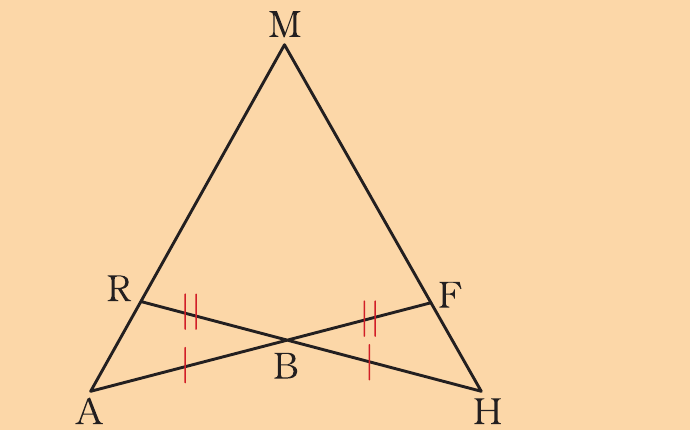
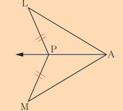

Congruence
4. In the following figure, prove that AĈD = BĐC.

5. Use the following figure to prove that BMA = CMA = 90°, given that AB = AC.

6. If ABCD is a square and AR = BR, prove that R is the midpoint of DC.

7. Prove that the line segment from the vertical angle of an isosceles triangle to the mid-point of its base is perpendicular to the base.
8. In the following figure, prove that BD = DC.

9. Prove that the bisector of the vertical angle of an isosceles triangle is perpendicular to the base at its mid-point.
10. In the following figure AB = HB and RB = BF. Prove that: (a) RÂB = FĤB (b) AM = HM

11. Use the following figure to prove that AP bisects LÂM, given that ∆ALP ≅ ∆AMP.

12. Prove that the perpendicular from the vertex to the base of an isosceles triangle bisects the base and the vertical angle.